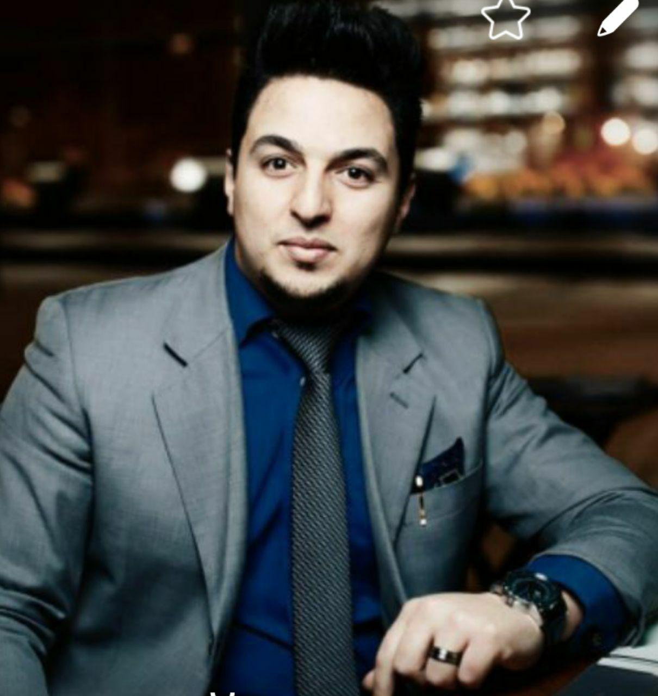
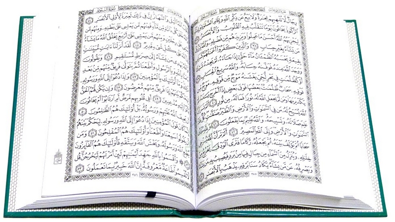

الشيخ الروحاني ابو الحبيب الزهدانيالشيخ الروحاني ابو الحبيب الزهدانيالشيخ الروحاني ابو الحبيب الزي
Phone: (123)-456-789

سماحة الشيخ ابو الحبيب الزهداني هو عالم في الروحيات يهتم بالنظر في الأمور الروحانية من الناحية الدينية بصفة عامة، ومن ناحية الدين الإسلامي الحنيف بصفة خاصة. له خبره واسعه في هذا المجال منذ 20 سنه. ينشط تركيزه في مجال تطهير ظاهر وباطن الإنسان، ويساعد الناس على فهم جموع العالم الخفي الغيبي الذي لا يدركونه بحواسهم من جن وملائكة ونفس إنساني وروح رباني وقلب. من أهم الخدمات الجليلية التي يقدّمها الشيخ الروحاني ابو الحبيب الزهداني مايلي : فك السحر والرقية الشرعية : علاج السحر والمس الشيطاني وكل الامراض الروحانية. جلب الحبيب :جلب الحبيب، تزويج العانس، رد المطلقه، التأليف بين الزوجين وإلقاء المحبة بينهما. الكشف الروحاني : الكشف العام عن جميع مناحي شخصية الإنسان وأسرار حياته المالية والعاطفيه، وكل ما ينبغي اصلاحه ليرتقي بحياته نحو الافضل.
يعرف فضيلة الشيخ الروحاني ابو الحبيب الزهداني العلم الروحاني أو العلوم الروحانية على أنها سر الله تعالى في خلقه وهي تجمع كل ما فيه خير وقوة وفائدة للإنسان وعكسها الشيطانيات او الجسمانيات، فالروحانيات علم سبق جميع الأديان حيث هو العلم الذي سخره الله تعالى لسيدنا ادم عليه السلام عندما علمه الأسماء الحسنى وهنا يكون التعليم من علم وليس من تحفيظ فلم يقل الله تعالى انه اخبر او ابلغ او حفظ آدم الأسماء ولكن علمه. وكما نعلم ان الأسماء تحفظ او تذكر ولا تعلم ولكن التعليم يكون لما فيه تفصيل وقواعد واسس. ومن هناك وعلى مدى الأيام والدهور حفظ الله تعالى هذا العلم واختص به عدد قليل من عباده وهذا هو علم سيدنا وحبيبنا محمد عليه السلام وعلم آل البيت وعلم والأمة واهل التقوى من بعدهم من التابعين وهو ينبع عن الالهام والادراك ثم من الصدور نقلا وابلاغا وهو الفتات ما وجد في الكتب او المقالات لان الله تعالى أراد لهذا العلم ان يكون خاص بمن يشاء من عباده وتحت ارادته تعالى. ثبت اهل العلم من الخاصة على ان هذا العلم يجب ان يحفظ ويبعد عن أي سفيه او جاهل او من يسئ استخدامه او العمل به من شيخ روحاني وساحرٍ أو مشعود.
مكّن الله عز وجل سماحة الشيخ الروحاني ابو الحبيب الزهداتي من أعمال جلب الحبيب عبر طرق الجذب وإستمالت قلب شخص معين لشخص آخر. ومن هذه الطرق ما يطلق عليه سحر المحبة وسحر العطف وسحر جلب الحبيب. يقوم الشيخ الروحاني ابو الحبيب من خلال هذه الأعمال بِ:
جلب الحبيب أو الحبيبة وتهييج الزوج والزوجة والحبيب ♥للطلب اتصلوا بنا على الرقم : 380930252029+ او من خلال الواتس اب على نفس الرقم
تسخير الزوج لمحبة زوجته وطاعتها ♥
تزويج العانس وجلب الخطاب ورد المطلقة ♥

السحر من الكبائر والموبقات السبع لما فيه من ضرر على الناس وتفريق بينهم وتعطيل لأمورهم، لكن هناك أشخاص لايخافون الله و يتعاملون به ، حيث يقومون بأعمال لجلب الجن وإستحضاره وأمره بفعل أمور تضر الناس، إن بركة الشيخ الروحاني ابو الحبيب الزهداني التي منّ بها الله عليه تمكنه من فك السحر الأبيض و علاج السحر الاسود وكذلك رفع ضررهما وتأثيرهما على صحة المسحور.
للطلب اتصلوا بنا على الرقم : 380930252029+ او من خلال الواتس اب على نفس الرقم